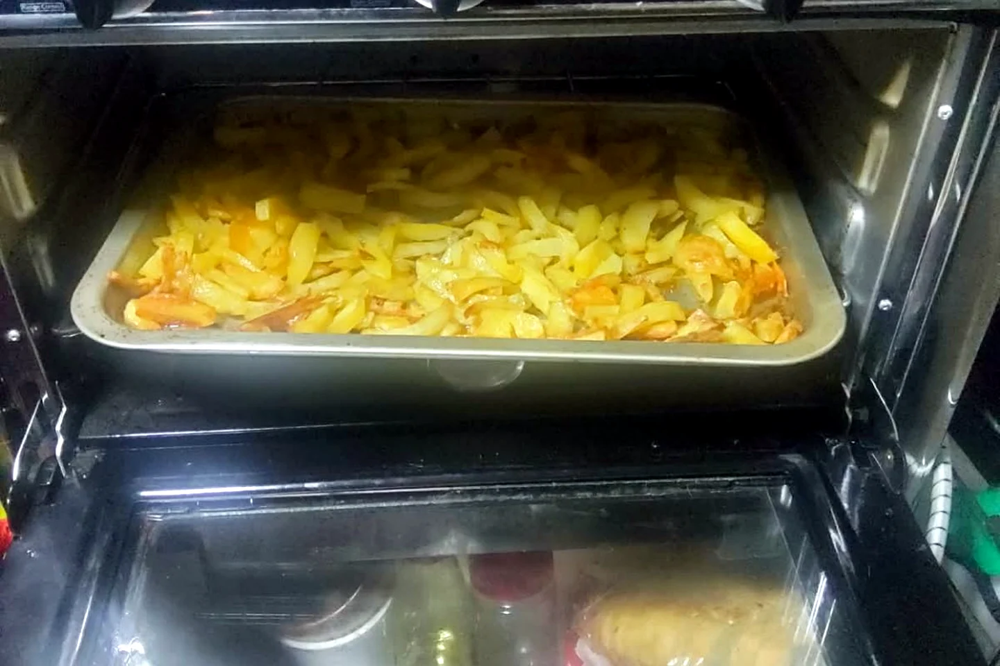

Cooking and baking in the smallest space — my kitchen in the red T4

I've never had a big kitchen in Roten. Still, I didn't just want to make sandwiches or eat out every day on the road. I wanted to brew coffee, prepare something warm, and even be able to bake. So my kitchen didn't take up many square meters, but came from fixed layouts.
One device, multiple tasks
My stove and the small oven were real workhorses. In the oven, I could make casseroles, oven-roasted vegetables, or something baked. On the stove were pots, pans, or coffee makers. Most of the time, I didn't need more — but I had to know beforehand what I wanted to use and when.
In a normal kitchen, you quickly add a bowl next to it. In the T4, a single bowl might already block the entire work surface. That's why I prepared ingredients first, immediately put the packaging back away, and immediately rinsed or set things aside. This little "mise en place" was the difference for me between cooking comfortably and complete chaos.
What has proven effective for small kitchens
- Dishes with few ingredients and a pot or dish.
- Foods that can be combined for multiple meals.
- A fixed spot for spices, knives, and lighters.
- As little packaging as possible so the trash doesn't take over the bus.
- Clean up immediately after dinner — thank you for that tomorrow morning.
Safety is always part of the menu
When cooking in the vehicle, I always ventilated and removed flammable items from the direct area of the flame. A device never goes unattended and, of course, does not run while driving. Gas lines, connections, and devices must be suitable and in good condition for their use. Especially in such confined spaces, heat, carbon monoxide, and fire can quickly become dangerous.
Baking at T4 was always a little bit of home for me. When the weather outside was bad and something warm came out of the oven inside, the red one suddenly no longer felt small. Then it was simply my apartment — just on four wheels.
See you soon and always have a good trip,
your Tussy 💛